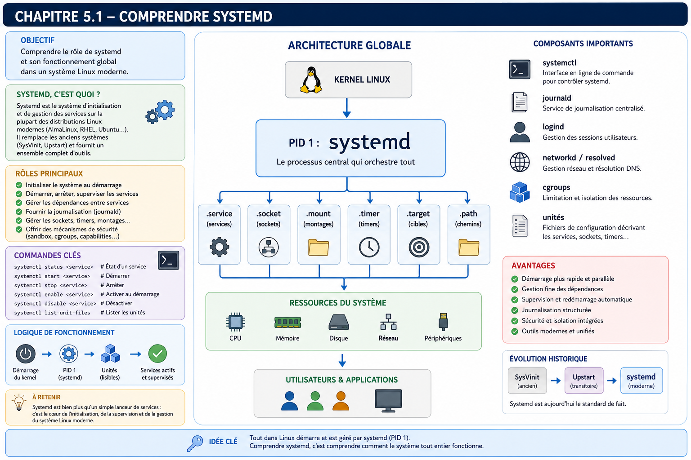

Chapitre 5.1 — Comprendre systemd
Campagne 5 — systemd et services
« Un service n'est pas un programme qui tourne. C'est un composant dont tout le cycle de vie est maîtrisé. »
Vous êtes ici
Partie I — Construire un socle sécurisé
Campagne 5 — systemd et les services
► 5.1 Comprendre systemd
5.2 Les unités (.service, .socket, .target…)
5.3 Créer le service Sentinel
5.4 Sandboxing systemd
5.5 Capacités Linux
5.6 Journalisation avec journald
5.7 Supervision et redémarrage automatique
5.8 Mission : rendre Sentinel résilient
Objectifs pédagogiques
À la fin de ce chapitre, vous serez capable de :
- comprendre pourquoi systemd existe ;
- expliquer son rôle dans un système Linux moderne ;
- distinguer PID 1 d'un simple processus utilisateur ;
- comprendre pourquoi un démon n'est plus écrit aujourd'hui comme il l'était il y a vingt ans ;
- identifier les responsabilités exactes de systemd dans une infrastructure de production ;
- préparer Sentinel à devenir un véritable service système.
Pourquoi ce chapitre existe
Jusqu'à présent, Sentinel est essentiellement une application Python. Nous la lançons manuellement.
python3 sentinel.py
ou
./sentinel
Cette approche est parfaitement adaptée au développement. Elle devient totalement insuffisante dès qu'une application doit fonctionner en production. Une infrastructure professionnelle attend beaucoup plus d'un service. Par exemple :
- démarrer automatiquement après un redémarrage ;
- s'arrêter proprement ;
- redémarrer après un crash ;
- produire des journaux ;
- limiter ses privilèges ;
- dépendre d'autres services ;
- être supervisé ;
- être mis à jour sans intervention manuelle.
Autrement dit, l'application ne suffit plus. Il faut désormais gérer son cycle de vie. C'est précisément le rôle de systemd.
Théorie détaillée
Avant systemd
Pour comprendre pourquoi systemd est devenu incontournable, il faut revenir quelques années en arrière. Pendant longtemps, les distributions Linux utilisaient un système d'initialisation appelé SysVinit. Le démarrage d'un serveur ressemblait à ceci :
Chaque service possédait généralement un script placé dans : /etc/init.d/ Par exemple :
/etc/init.d/httpd start
ou
service sshd start
Ces scripts étaient de simples scripts Shell. Ils exécutaient généralement :
- quelques vérifications ;
- le lancement du démon ;
- parfois un
fork(); - parfois un fichier PID.
Cette approche a fonctionné pendant plusieurs décennies. Mais les infrastructures ont profondément évolué.
Les limites de SysVinit
Les premiers grands centres de données ont rapidement rencontré plusieurs difficultés.
Dépendances
Prenons un exemple. Sentinel dépend de :
- la pile réseau ;
- FreeIPA ;
- journald ;
- éventuellement Podman.
Comment garantir l'ordre de démarrage ? Avec SysVinit :
Le système reposait essentiellement sur :
- un ordre alphabétique ;
- des numéros ;
- quelques dépendances déclarées.
Les erreurs étaient fréquentes.
Démarrage lent
Autre problème. Les scripts étaient souvent exécutés séquentiellement.
Même lorsque deux services étaient totalement indépendants. Les machines multicœurs restaient largement sous-utilisées.
Supervision
Supposons maintenant que Sentinel plante. Qui redémarre le processus ? Dans SysVinit : souvent... personne. Il fallait :
- un cron ;
- un script externe ;
- ou une intervention humaine.
Aujourd'hui, ce comportement serait considéré comme inacceptable.
L'arrivée de systemd
systemd est apparu avec un objectif très clair. Ne plus simplement démarrer les services. Mais gérer l'ensemble du système. Le changement de philosophie est majeur. Avant :
Aujourd'hui :
systemd n'est plus un simple lanceur. C'est un gestionnaire de services et d'unités qui orchestre des transactions de démarrage et d'arrêt.
PID 1
Sous Linux, tous les processus possèdent un identifiant appelé : PID Le premier processus créé par le noyau est toujours : PID 1 Sur AlmaLinux moderne :
On peut le vérifier.
ps -p 1
ou
ps -fp 1
Exemple :
UID PID PPID CMD
root 1 0 /usr/lib/systemd/systemd
L'arbre des processus de l'espace utilisateur est normalement enraciné sous lui. Les threads du noyau constituent un monde distinct et ne sont pas des services enfants de systemd.
Pourquoi PID 1 est-il particulier ?
Le noyau possède un comportement spécifique vis-à-vis du processus numéro 1. Si un processus ordinaire meurt : le système continue. Si PID 1 disparaît : le système devient incapable de gérer correctement les processus. Sur la plupart des distributions, cela conduit rapidement à un kernel panic ou à un état irrécupérable. PID 1 possède donc des responsabilités très particulières.
Une vision hiérarchique
Tous les processus Linux appartiennent à un arbre.
Même lorsqu'un utilisateur ouvre une session SSH.
Tous ces processus restent rattachés, directement ou indirectement, à PID 1. Pour suivre un service de manière fiable, systemd ne se contente cependant pas de cette parenté : il place ses processus dans un cgroup, ce qui évite de perdre leur trace lorsqu'ils créent des enfants ou se réorganisent. Cette hiérarchie est essentielle pour comprendre :
- les signaux ;
- les groupes de contrôle (cgroups) ;
- la supervision ;
- l'arrêt du système.
systemd ne lance pas seulement des services
C'est une idée reçue très fréquente. systemd est responsable de nombreux composants. Par exemple : journald pour les journaux. logind pour les sessions. networkd pour certaines configurations réseau. resolved pour la résolution DNS. tmpfiles pour la gestion automatique des répertoires temporaires. timedated pour la gestion de l'heure. Autrement dit : systemd est devenu une véritable plateforme. Il dépasse largement le simple lancement de services.
La philosophie déclarative
C'est probablement la caractéristique la plus importante de systemd. Prenons une ancienne approche. Un script Shell contenait :
Créer un répertoire.
Lancer le démon.
Créer un fichier PID.
Attendre.
Relancer si nécessaire.
Aujourd'hui, systemd demande simplement : Quel est l'état souhaité ? Par exemple :
Le service Sentinel
doit être
actif,
redémarré automatiquement,
après le réseau,
avec peu de privilèges,
et produire des journaux.
systemd se charge ensuite d'atteindre cet état. Cette approche est dite déclarative. Elle sera omniprésente dans les prochains chapitres.
Le fonctionnement interne de systemd
Pour comprendre la puissance de systemd, il faut abandonner une vision simpliste consistant à dire :
« systemd démarre des services. »
En réalité, systemd est un gestionnaire d'état. Il possède une représentation complète du système. Pour lui, un serveur est un ensemble d'objets reliés entre eux. Par exemple :
Chaque composant possède :
- un état ;
- des dépendances ;
- des conditions ;
- un cycle de vie.
systemd orchestre l'ensemble.
Les unités (Units)
L'objet fondamental manipulé par systemd est appelé une Unit. Une unité représente une ressource du système. Contrairement à une idée reçue, une unité n'est pas forcément un service. Il existe plusieurs dizaines de types d'unités. Les plus importantes sont : .service Un service. Exemple :
sshd.service
.socket Une socket réseau. .mount Un système de fichiers. .target Un objectif de démarrage. .timer Un planificateur. .path Une surveillance de fichier. .device Un périphérique. Toutes ces ressources sont gérées par le même moteur. Cette uniformité constitue l'une des grandes forces de systemd.
Les dépendances
Supposons que Sentinel nécessite :
- le réseau ;
- FreeIPA ;
- journald.
Avec SysVinit, cette logique était souvent codée dans un script Shell. Avec systemd, elle devient déclarative. Conceptuellement :
systemd calcule alors automatiquement l'ordre de démarrage. L'administrateur décrit les relations. systemd construit le plan d'exécution.
Les Jobs
Lorsqu'on demande :
systemctl start sentinel
systemd ne lance pas immédiatement Sentinel. Il construit d'abord un Job. Un Job est une action planifiée. Par exemple :
Démarrer Sentinel
Mais systemd constate immédiatement :
Le réseau n'est pas prêt.
Il ajoute alors :
Démarrer NetworkManager
Puis :
Attendre network.target
Puis seulement :
Démarrer Sentinel
Autrement dit : la commande demandée par l'utilisateur est transformée en un graphe d'actions.
Les Targets
Une autre innovation majeure est la notion de Target. Une Target représente un état souhaité du système. Par exemple : multi-user.target signifie :
Serveur opérationnel
sans interface graphique.
Autre exemple. graphical.target correspond généralement à :
Système complet
avec interface graphique.
Une Target ne fait rien. Elle regroupe simplement plusieurs unités. Schématiquement :
Lorsqu'une Target est atteinte, tous les services qui lui sont associés doivent être opérationnels.
Les cgroups
Nous arrivons maintenant à l'une des technologies les plus importantes de systemd. Les Control Groups, ou cgroups. Les cgroups permettent au noyau Linux de regrouper des processus. Par exemple.
Sentinel
peut lancer :
- plusieurs threads ;
- plusieurs processus Python ;
- plusieurs workers.
systemd ne voit pas uniquement le processus principal. Il voit tout le groupe.
Cette vision de groupe change complètement la supervision.
Pourquoi les cgroups sont révolutionnaires ?
Avant leur apparition, arrêter proprement un démon pouvait être compliqué. Le processus principal mourait. Les processus fils continuaient parfois à tourner. Ils devenaient :
Orphelins
ou
Zombies
Aujourd'hui : systemctl stop sentinel entraîne l'arrêt du groupe complet. systemd connaît tous les processus appartenant au service. Aucun processus ne reste oublié.
Les ressources
Les cgroups permettent également de contrôler les ressources. Par exemple : Mémoire maximale Nombre maximal de processus CPU Entrées/sorties disque Autrement dit, systemd n'est plus uniquement un lanceur. Il devient également un superviseur de ressources. Nous exploiterons ces fonctionnalités dans le chapitre consacré au sandboxing.
Pourquoi écrire un démon est devenu beaucoup plus simple ?
Historiquement, un démon Linux devait réaliser lui-même de nombreuses opérations. Par exemple :
- effectuer un
fork(); - détacher le terminal ;
- créer un fichier PID ;
- gérer les signaux ;
- parfois abandonner les privilèges Root avec
setuid(); - gérer ses propres journaux ;
- implémenter une logique de redémarrage.
Un démon ressemblait souvent à plusieurs centaines de lignes de code "infrastructure" avant même de commencer son véritable travail. Aujourd'hui, cette philosophie a changé. Le rôle de l'application est devenu beaucoup plus simple. Sentinel devra essentiellement :
- écouter ;
- traiter des requêtes ;
- produire des événements.
systemd prendra en charge :
- le lancement ;
- les dépendances ;
- le redémarrage ;
- la journalisation ;
- les limites de ressources ;
- les privilèges ;
- les cgroups ;
- les signaux d'arrêt.
Cette séparation des responsabilités rend les applications :
- plus simples ;
- plus robustes ;
- plus faciles à maintenir.
L'arrêt propre d'un service
Un autre avantage souvent sous-estimé concerne l'arrêt des applications. Supposons que l'on exécute :
systemctl stop sentinel
systemd ne tue pas immédiatement le processus. La séquence est généralement la suivante.
Si le processus refuse de s'arrêter :
Cette différence est importante. Une application bien écrite doit réagir correctement au signal SIGTERM. Nous adapterons Sentinel dans ce sens lors des prochains chapitres.
Pourquoi cela change notre manière de développer Sentinel ?
Jusqu'à présent, nous écrivions une application Python. À partir de maintenant, nous allons écrire un service système. Cette nuance est fondamentale. Notre réflexion change complètement. Nous ne nous demanderons plus uniquement :
« Mon code fonctionne-t-il ? »
Nous nous demanderons également :
- démarre-t-il automatiquement ?
- survit-il à un crash ?
- produit-il des journaux exploitables ?
- peut-il être arrêté proprement ?
- peut-il être limité à certains privilèges ?
- est-il compatible avec une supervision ?
- peut-il être déployé automatiquement par Ansible ?
Autrement dit, nous ne développons plus un programme. Nous construisons un composant d'infrastructure.
Approfondissement
systemd est un orchestrateur d'état, pas un lanceur de processus
Lorsqu'un administrateur découvre systemd, il retient souvent les commandes suivantes :
systemctl start
systemctl stop
systemctl restart
Cela donne l'impression que systemd est simplement un remplaçant de :
service
C'est une vision très réductrice. Le véritable rôle de systemd consiste à maintenir le système dans l'état souhaité. Prenons un exemple. L'état désiré est :
systemd ne lance pas seulement Sentinel. Il mémorise l'état de l'unité et applique la politique déclarée — par exemple un redémarrage après échec si Restart= le demande. Il ne garantit pas à lui seul que l'application répond correctement : cette limite justifiera le watchdog et la supervision du chapitre 5.7.
PID 1 n'est pas un processus comme les autres
Les processus de l'espace utilisateur rejoignent normalement un arbre enraciné sous PID 1. Combinée aux unités et aux cgroups, cette position donne à systemd une vision globale des services qu'il gère. Prenons un exemple.
Cette vision lui permet :
- d'arrêter proprement un groupe complet de processus ;
- de connaître les dépendances ;
- de limiter les ressources ;
- de redémarrer uniquement ce qui doit l'être.
Cette capacité n'existe pas lorsqu'une application est simplement lancée avec :
python sentinel.py
La disparition du code "infrastructure"
Pendant longtemps, les développeurs de démons Linux devaient écrire énormément de code qui n'avait rien à voir avec leur métier. Par exemple :
Aujourd'hui, ce code disparaît progressivement. Il est remplacé par une unité systemd. Le résultat est remarquable. L'application se concentre uniquement sur sa mission. Le système d'exploitation prend en charge l'infrastructure. Cette séparation est comparable à celle qui existe entre :
- Python et son interpréteur ;
- Kubernetes et les conteneurs ;
- FreeIPA et les comptes locaux.
Chaque composant se concentre sur son domaine d'expertise.
Pourquoi cela améliore la sécurité
Plus une application contient de code d'infrastructure, plus elle risque d'introduire des erreurs. Prenons un exemple. Une application implémente elle-même :
- son mécanisme de redémarrage ;
- sa rotation de logs ;
- son changement d'utilisateur ;
- son sandbox.
Chaque fonctionnalité représente plusieurs centaines de lignes de code supplémentaires. Autant de possibilités de bogues. En confiant ces responsabilités à systemd, nous utilisons un composant :
- extrêmement testé ;
- utilisé sur des millions de serveurs ;
- audité depuis plus d'une décennie.
Le meilleur code de sécurité est souvent celui que l'on n'a pas besoin d'écrire.
Concevoir la politique
Un architecte ne réfléchit pas en termes de processus. Il réfléchit en termes de services. La nuance paraît subtile. Elle change pourtant complètement la conception. Prenons Sentinel. Le développeur voit : Programme Python L'architecte voit : Service métier Ce service possède :
- une disponibilité attendue ;
- des dépendances ;
- un niveau de criticité ;
- des contraintes de sécurité ;
- une supervision ;
- un cycle de mise à jour.
L'application n'est qu'un détail d'implémentation.
Les dépendances doivent être explicites
Un service qui dépend implicitement d'un autre finit toujours par provoquer des incidents. Prenons un exemple. Sentinel démarre. FreeIPA n'est pas encore disponible. Deux comportements sont possibles. Premier cas. L'application plante. Deuxième cas. systemd attend simplement que FreeIPA soit opérationnel. L'architecte privilégie toujours la seconde approche. Les dépendances doivent être déclarées, jamais supposées.
Les services doivent être remplaçables
Imaginons que Sentinel soit entièrement réécrit en Rust dans quelques années. La politique de sécurité devrait-elle changer ? Non. L'unité systemd devrait conserver :
- le même nom ;
- les mêmes dépendances ;
- les mêmes contraintes ;
- la même supervision.
Le langage n'est pas l'architecture. Cette séparation facilite énormément les évolutions futures.
Point de vue offensif
Un attaquant sait que de nombreuses applications maison sont exécutées ainsi.
python mon_application.py &
Puis plus rien. Pas de supervision. Pas de journalisation. Pas de redémarrage. Pas de limitation mémoire. Pas de restrictions de privilèges. Ces applications représentent souvent des cibles privilégiées.
Les processus orphelins
Supposons qu'un service démarre plusieurs processus. L'administrateur tue uniquement le processus principal. Des processus secondaires continuent d'exécuter du code. Ces situations existaient fréquemment avant les cgroups. Aujourd'hui, systemd suit l'ensemble du groupe. Cette évolution réduit considérablement les comportements imprévisibles.
Les privilèges excessifs
Beaucoup de services historiques continuaient à fonctionner en tant que : root simplement parce qu'ils avaient besoin d'ouvrir un port privilégié au démarrage. Une fois ce port ouvert, ils oubliaient parfois de perdre leurs privilèges. systemd permet aujourd'hui de déléguer cette logique de manière beaucoup plus propre. Nous approfondirons ce mécanisme dans les chapitres consacrés :
- aux capacités Linux ;
- au sandboxing.
En entreprise
Dans un environnement professionnel, presque aucun service critique n'est lancé manuellement. Prenons un exemple. Le serveur Sentinel redémarre à 3 heures du matin après une mise à jour du noyau. Personne n'est connecté. Pourtant, quelques secondes plus tard, l'ensemble des composants reviennent automatiquement.
Aucune intervention humaine. Cette automatisation constitue l'un des fondements de l'exploitation moderne.
Les unités sont du code
Les entreprises les plus matures considèrent désormais les fichiers : .service comme du code. Ils sont :
- versionnés dans Git ;
- relus ;
- testés ;
- validés ;
- déployés automatiquement.
Modifier une unité systemd directement sur un serveur de production est souvent interdit. La modification passe d'abord par :
- une revue ;
- un pipeline CI/CD ;
- Ansible.
Cette approche garantit que tous les serveurs restent homogènes.
Culture technique
Lorsque systemd a été introduit, il a suscité d'importants débats dans la communauté Linux. Pourquoi ? Parce qu'il ne se limitait plus au rôle traditionnel d'init. Il intégrait progressivement :
- la journalisation (
journald) ; - la gestion des connexions (
logind) ; - certains aspects du réseau (
networkd,resolved) ; - la synchronisation horaire (
timesyncd) ; - les périphériques (
udev, désormais intégré).
Certains y voyaient une concentration excessive de responsabilités. D'autres considéraient qu'un système moderne avait besoin d'un orchestrateur central capable de coordonner ces composants. Aujourd'hui, quelle que soit l'opinion que l'on puisse avoir sur cette évolution, systemd est devenu le standard de fait de la quasi-totalité des distributions Linux destinées aux serveurs, notamment AlmaLinux, RHEL, Rocky Linux, Fedora, Debian, Ubuntu, SUSE et bien d'autres.
Dans ce manuel, nous ne cherchons pas à défendre un choix historique. Nous cherchons à maîtriser l'outil réellement utilisé dans les infrastructures professionnelles actuelles.
Piège classique
Croire qu'un programme lancé en arrière-plan est un service
Beaucoup d'applications internes sont encore démarrées ainsi :
nohup python sentinel.py &
ou
./sentinel &
Techniquement, cela fonctionne. Mais ce n'est pas un service au sens de systemd. Il manque notamment :
- un cycle de vie ;
- une supervision ;
- une intégration avec les journaux ;
- une politique de redémarrage ;
- une gestion des dépendances ;
- un contrôle des ressources ;
- une intégration avec le reste du système.
Un véritable service est un citoyen du système d'exploitation. Pas simplement un processus exécuté en arrière-plan.
TP 1 — Observer PID 1 et les unités
Objectif
Transformer Sentinel, actuellement lancé comme une simple application Python, en un véritable service système intégré à l'environnement AlmaLinux. À la fin de ce laboratoire, vous devrez être capable de :
- identifier les services déjà présents sur un système ;
- comprendre leur cycle de vie ;
- observer leurs dépendances ;
- distinguer un processus d'un service systemd ;
- préparer Sentinel à être intégré dans systemd au chapitre suivant.
Architecture
À ce stade du manuel, Sentinel n'est pas encore un service systemd. C'est précisément ce qui va évoluer dans cette campagne.
Étape 1 — Identifier PID 1
Afficher le processus numéro 1.
ps -fp 1
Comparer également avec :
pstree -p
Repérer :
- systemd ;
- ses principaux services ;
- la hiérarchie des processus.
Étape 2 — Explorer les unités
Lister quelques unités.
systemctl list-units
Puis uniquement les services.
systemctl list-units --type=service
Identifier notamment :
- sshd
- firewalld
- chronyd
- NetworkManager
Essayez d'imaginer les dépendances entre eux.
Étape 3 — Observer un service
Choisissez par exemple :
systemctl status firewalld
Observer attentivement :
- l'état Active ;
- le PID principal ;
- les journaux récents ;
- le chemin de l'unité.
Réalisez le même exercice avec :
systemctl status sshd
Comparez les deux sorties.
TP 2 — Relier processus, dépendances et journaux
Étape 4 — Observer l'arbre des processus
Afficher :
pstree -p
Repérez :
Lancez ensuite un petit programme Python. Observez où il apparaît dans l'arbre. Répondez à la question suivante :
Pourquoi n'est-il pas considéré comme un service systemd ?
Étape 5 — Étudier les dépendances
Afficher :
systemctl list-dependencies multi-user.target
Identifier :
- quels services démarrent automatiquement ;
- lesquels sont indispensables ;
- lesquels semblent liés au réseau.
L'objectif n'est pas de tout mémoriser. Il est de comprendre que systemd raisonne sous forme de graphe de dépendances.
Étape 6 — Observer les journaux
Afficher les journaux d'un service. Par exemple :
journalctl -u firewalld
Puis :
journalctl -u sshd
Comparer avec :
journalctl -b
Réfléchissez : Pourquoi est-il intéressant que les journaux soient directement associés au service ?
Étape 7 — Réflexion
Imaginez maintenant Sentinel en production. Listez toutes les fonctionnalités que systemd pourrait lui apporter sans modifier une seule ligne de code Python. Par exemple :
- démarrage automatique ;
- redémarrage après un crash ;
- journalisation ;
- dépendances ;
- limitation mémoire ;
- etc.
Cette liste servira de cahier des charges pour le chapitre suivant.
Mission d'ingénieur
Contexte
Votre entreprise exploite plusieurs applications internes développées au fil des années. Chaque équipe a adopté sa propre méthode de lancement. Certains utilisent :
nohup application &
D'autres :
screen
D'autres encore :
tmux
Certaines applications sont même lancées depuis :
rc.local
ou directement depuis des scripts Bash. Les conséquences sont nombreuses :
- aucune homogénéité ;
- supervision difficile ;
- journalisation disparate ;
- arrêt parfois brutal des applications ;
- redémarrage manuel après incident ;
- forte dépendance aux administrateurs historiques.
La direction souhaite normaliser l'exploitation de toutes les applications.
Votre mission
Vous devez proposer une stratégie de migration vers systemd. Votre proposition devra répondre notamment aux questions suivantes.
- Quels services migrer en priorité ?
- Quels bénéfices immédiats attendre ?
- Quels risques faut-il anticiper ?
- Comment accompagner les équipes de développement ?
- Quels contrôles mettre en place avant la mise en production ?
Votre réponse devra montrer que systemd constitue une évolution d'architecture, et non un simple changement de commandes.
Impact sur Sentinel
Jusqu'à présent, Sentinel était un programme. À partir de maintenant, il devient progressivement un service système. Cette évolution est déterminante. Avant :
Après :
Ce changement influencera directement tous les chapitres suivants. Le service Sentinel pourra alors bénéficier :
- des cgroups ;
- du sandboxing ;
- des capacités Linux ;
- de
journald; - des politiques de redémarrage ;
- d'Ansible ;
- du packaging RPM.
Autrement dit, tout l'écosystème Linux moderne devient disponible.
Synthèse
- systemd est le processus PID 1 d'AlmaLinux.
- Il ne lance pas simplement des services : il orchestre l'état du système.
- Les unités constituent les objets fondamentaux manipulés par systemd.
- Les dépendances sont déclaratives et non codées dans des scripts Shell.
- Les cgroups permettent de superviser un groupe complet de processus.
- Les applications modernes délèguent à systemd la gestion du cycle de vie.
- Un programme lancé en arrière-plan n'est pas un véritable service système.
- Sentinel évoluera progressivement pour exploiter pleinement les capacités offertes par systemd.
Schéma récapitulatif

Pour aller plus loin
Maintenant que nous comprenons ce qu'est systemd, nous allons étudier le langage qu'il utilise. Contrairement à SysVinit, systemd ne manipule pas uniquement des services. Il orchestre une grande variété d'objets appelés unités (Units).
Le chapitre 5.2 — Les unités (.service, .socket, .target, .timer…) nous permettra de découvrir ces différents types d'unités, leurs interactions et la manière dont elles composent une architecture de services moderne. C'est à partir de ces briques que nous construirons ensuite Sentinel.service. 5.2 — Les unités systemd →